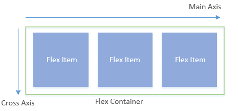

传统的CSS布局方法中，一般使用float属性和display:table来实现布局，但在使用的过程中总有种无法随心所欲的感觉，元素的位置摆放总是显得不是那么的直观，而Flexbox很好的解决了这个问题。Flexbox俗称弹性盒子模型，在开始使用Flexbox之前，首先要声明一个Flex容器（Flex Container）。而Flex容器中的元素称为Flex项目（Flex Item）。
声明一个Flex容器：
1 | div { |
对于一个Flex容器，其存在两个轴。水平方向的称为主轴（main axis），竖直方向的称为交叉轴（cross axis）。如下图所示：

FlexBox主要包含12个属性，其中Flex容器6个，Flex项目6个。
Flex容器属性
flex-direction
flex-direction属性决定了项目的排列方向，语法如下：
1 | flex-direction: row | row-reverse | column | column-reverse; |
可取的值有：
row（默认值）：项目水平方向排列，起点在左端。
row-reverse：项目水平方向排列，起点在右端。
column：项目竖直方向排列，起点在上沿。
column-reverse：项目竖直方向排列，起点在下沿。
默认情况下，flex-direction的取值为row：
当flex-direction属性的值为row-reverse时，项目的起点在右端：
当flex-direction属性的值为column时，项目垂直排列，起点在上沿：
当flex-direction属性的值为column-reverse时，项目垂直排列，起点在下沿：
flex-wrap
flex-wrap属性规定了项目在一条轴线上排不下时，是否换行。语法如下：
1 | flex-wrap: nowrap | wrap | wrap-reverse; |
属性可取的值有：
nowrap（默认）：不换行。
wrap：换行，第一行在上方。
wrap-reverse：换行，第一行在下方。
flex-wrap默认取值为nowrap，即不换行，如果项目排列方向为水平方向，则项目宽度自动收缩（因为项目的flex-shrink属性值默认为1，即如果空间不足，该项目宽度将缩小。）：
将flex-wrap属性值设置为warp时：
将flex-wrap属性值设置为wrap-reverse时：
当项目排列方向为竖直方向，如果一列排不下并且flex-wrap属性值为no-wrap时，项目将会超出容器的高度，项目并不会收缩。
flex-flow
flex-flow属性是flex-direction属性和flex-wrap属性的简写形式，默认值为row nowrap。
justify-content
justify-content属性定义了项目在主轴上的对齐方式。语法如下：
1 | justify-content: flex-start | flex-end | center | space-between | space-around; |
属性可取的值有：
flex-start（默认值）：左对齐。
flex-end：右对齐。
center： 居中。
space-between：两端对齐，项目之间的间隔都相等。
space-around：每个项目两侧的间隔相等。项目之间的间隔比项目与边框的间隔大一倍。
默认情况下为左对齐，当justify-content属性值设为flex-end时：
当justify-content属性值为center时：
当justify-content属性值为space-between时：
当justify-content属性值为space-around时：
align-items
align-items属性定义项目在交叉轴上如何对齐。语法如下：
1 | align-items: flex-start | flex-end | center | baseline | stretch; |
属性可取的值有：
flex-start：交叉轴的起点对齐。
flex-end：交叉轴的终点对齐。
center：交叉轴的中点对齐。
baseline: 项目的第一行文字的基线对齐。
stretch（默认值）：如果项目未设置高度或设为auto，将占满整个容器的高度。
当align-items属性值为flex-start时（将第2，4个项目高度设置为120px，以更好的区分各属性的效果）：
当align-items属性值为flex-end时：
当align-items属性值为center时：
当align-items属性值为baseline时，项目沿着第一行文字的基线对齐：
当align-items属性值为stretch（默认值）时，如果项目未设置高度或设为auto，将占满整个容器的高度。
align-content
align-content属性定义了多根轴线（多行）的对齐方式。如果项目只有一根轴线，该属性不起作用。语法如下：
1 | align-content: flex-start | flex-end | center | space-between | space-around | stretch; |
属性可取的值有：
flex-start：与交叉轴的起点对齐。
flex-end：与交叉轴的终点对齐。
center：与交叉轴的中点对齐。
space-between：与交叉轴两端对齐，轴线之间的间隔平均分布。
space-around：每根轴线两侧的间隔都相等。所以，轴线之间的间隔比轴线与边框的间隔大一倍。
stretch（默认值）：轴线占满整个交叉轴。
当align-content属性值为flex-start时，项目交叉轴的起点对齐：
当align-content属性值为flex-end时，项目交叉轴的终点对齐：
当align-content属性值为center时，项目交叉轴的中点对齐：
当align-content属性值为space-between时：
当align-content属性值为space-around时：
当align-content属性值为stretch（默认值），项目高度为auto时，项目将占满整个交叉轴：
项目属性
order
order属性定义项目的排列顺序。数值越小，排列越靠前，默认为0，它可以接受一个正值，也可以接受一个负值。语法如下：
1 | order: <integer>; |
默认情况下，因为项目的order属性都为0，所以排列顺序按照HTML源码进行排列，比如：
1 | <ul> |
在FlexBox布局里，li默认按1，2，3，4的顺序排列，现在不改变HTML源码的情况下，将序号为1的li移到最末尾：
这里只需将第一个li的order属性值设为大于0的数即可。
flex-grow
flex-grow属性定义项目的放大比例，默认为0，即如果存在剩余空间，也不放大。语法如下：
1 | flex-grow: <number> |
如果所有项目的flex-grow属性都为1，则它们将等分剩余空间（如果有的话）：
从结果可以看到，这三个li的宽度都变大了，等分了外层ul的剩余空间。
如果一个项目的flex-grow属性为2，其他项目都为1，则前者占据的剩余空间将比其他项多一倍：
flex-shrink
flex-shrink属性定义了项目的缩小比例，默认为1，即如果空间不足，该项目将缩小。语法如下：
1 | flex-shrink: <number>; |
如果所有项目的flex-shrink属性都为1，当空间不足时，都将等比例缩小。如果一个项目的flex-shrink属性为0，其他项目都为1，则空间不足时，前者不缩小。负值对该属性无效：
flex-basis
flex-basis属性定义了在分配多余空间之前，项目占据的主轴空间（main size）。浏览器根据这个属性，计算主轴是否有多余空间。它的默认值为auto，即项目的本来大小。基本语法如下：
1 | flex-basis: <length> | auto; |
flex-basis可以手动的设置为一个合法的px值，这样项目原本的width将失效。比如，第一个li的宽度为70px，在将其flex-basis属性设置为140px之后：
flex
flex属性是flex-grow, flex-shrink 和 flex-basis的简写，默认值为0 1 auto。后两个属性可选。该属性有两个快捷值：auto (1 1 auto) 和 none (0 0 auto)。
align-self
align-self属性允许单个项目有与其他项目不一样的对齐方式，可覆盖align-items属性。默认值为auto，表示继承父元素的align-items属性，如果没有父元素，则等同于stretch。
语法如下：
1 | align-self: auto | flex-start | flex-end | center | baseline | stretch; |
比如，将第二个li的aligh-self属性值设置为flex-end：